等级:main(locked)
哑铃姐特征
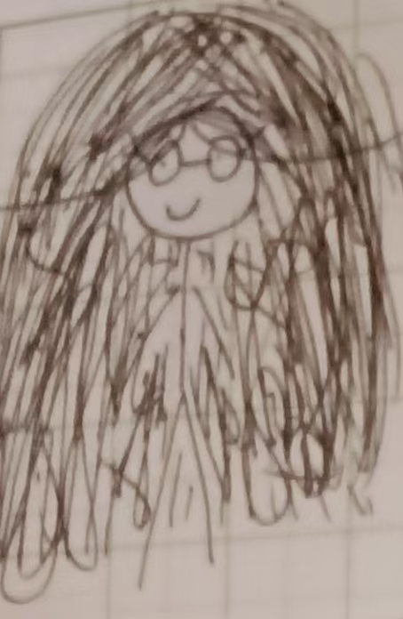
图:XM,YFL
据YFL收集的特征:
头发特长、两条头发独现
眼镜出现
据YF收集特征:
头部结缔组织混乱
有一定概率出现嘉欣形态
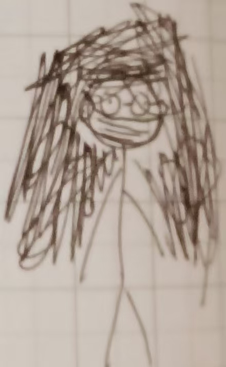
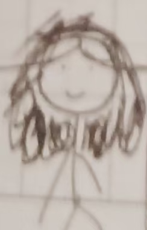
(无装备图)-XM绘
等级:midden(locked)
哑铃姐刷新机制(YFL收集)
雪萧区
1.二楼走廊:42%
2.休息区:52%
3.广原地:6%
刷新的区域较少，如需观察目标，可以前往1或2处,易出没
等级:best tall+(locked)
哑铃姐习性
(XM收集习性)
在上铺时有概率将头发伸至下铺，对下铺造成恐慌
把别人内衣认成自己的
(YFL收集习性)
在遇见时和她打招呼,会回应你并且挥手,否则会出现白眼
(YF收集习性)
有可能会发出跪异的声音,可能唱日文歌(YFL收集)
四天之内不会洗袜子
等级:(locked)
哑铃姐特殊事情出现概率
在特殊区减石溅积地中的夏甫中,有概率出现其的袜子。(YF收集)
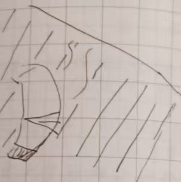
概率(跟据推算):78.9%
(约数，实际后三位小数并无意义，所以省略)
(概率计算与下图由XM)
袜子根据信息(#2025000602 YF收集)得出了
诡异:79/100
(*特殊为63/90，49/50，23/120，41/150，因人而异)
减少的san值:23%
(有时浮动，此为平均值)
行为习性：将袜子放其通风区域,使环境被标记(用气体)
等级:midden+
据...0605减少san值的声明
此(23%)为平均值,具体如下
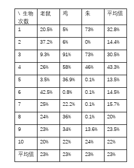
等级:tall+(locked)
嘉欣*形态
特征:出现黑口罩
概率:37.23%
形态可以减少空气值 上限20%
自信点+23.63% or -0.6%
士气:±6.5%
此形态既有利端，也有弊端，从客观度来看,作用不大,
而且弊端大于利端,从使用者看，而是利大干弊。
分析:对自身用处大,客观角度是大多为缺点。
等级:best tall(locked)
哑铃姐伴随物
《法医秦明》(小说)
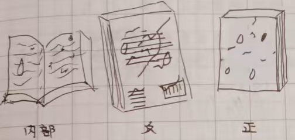
该物在下铺观看
特点:伴随其口部分泌物质与一些食物的残渣(XM收集、YFL收集)
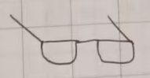
眼镜(头戴物品) 大概率出现在头上
等级:tall+(locked)
哑铃姐石溅积地活动区域
(XM收集)
1.积地平原21%
2.积地土原:29%
3.混凝土山洞穴栖息地区:19%
4.混凝土山洞穴栖息地区隔壁:31%
(YFL收集)在该物往[4]处时发出声音"谁想我了"
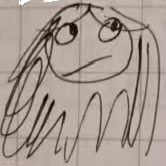
(手里拿着水壶摇晃)
该生物会说全宿舍的人暗恋她(包括叫关)
等级:midden+
哑铃姐行性
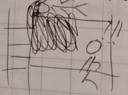
(把头发伸至下铺造成惊吓)
惊吓时san值减少最高值的3%
等级:tall+(locked)
策锁区习牲
在其他人洗澡时开关灯
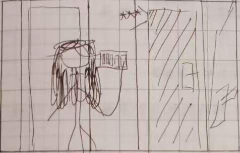
其他:
把卫生巾丢进厕所内说是别人干的(YFL收集)
等级:tall
哑铃姐习武习性
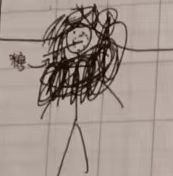
哑铃姐习武状态想象图
在状态同时消耗与补充能,十分汁绘
会导致身体出现一些异常,小概率被踢出地球OL
等级:midden+
哑铃姐随身物--嘉欣形态
口罩
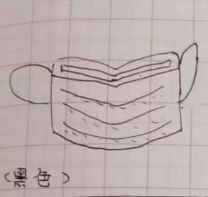
(具体效果见#2025000606)
等级:tall(locked)
哑铃姐声音波段解析
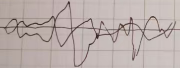
声波段足以证明了哑铃姐声音的效果
清理耳内分泌物质
消除声源一定半径*内的朱油
[一定半径] dB*(1.5dB+50)/2 dB:分贝